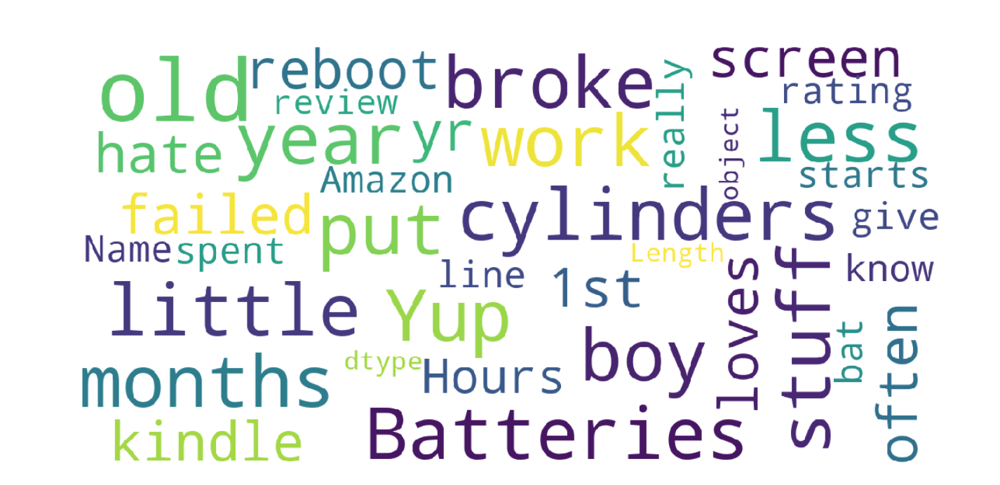

Using tech to separate real reviews from bots, bias, and spam
Our goal was to use machine learning to explore which reviews of Amazon products are genuine, valuable reviews, versus which reviews are irrelevant, paid, or spam. We then visualized our findings using a Tableau story. Please use the toggle in the upper left to explore our research.
Several findings emerged about which reviews are genuine and add value to potential buyers and the retail community: Unique reviews were more likely to be genuine customer reviews, whereas duplicate reviews were idntified as spam. Real customer reviews were shorter, and indicated overall satisfaction or dissatisfaction with the product.